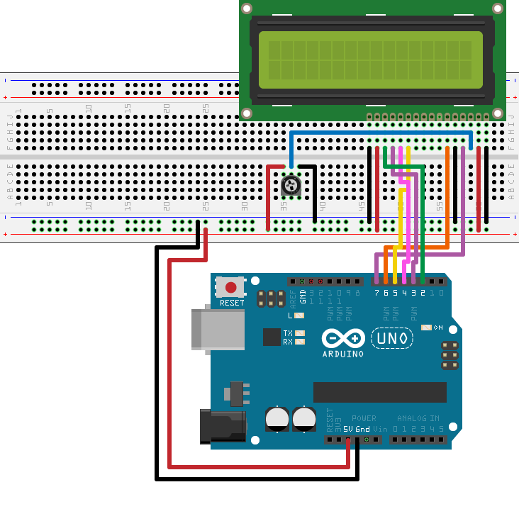
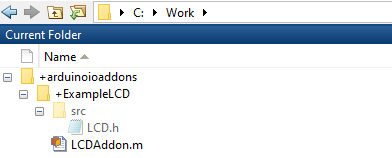

Create LCD Add-on
This example shows how to create an LCD add-on library and display “Hello World!” on an LCD. For more information on LCDs, see RGB Backlit LCDs.
Connect Arduino to LCD
You can connect an LCD display to your Arduino® Uno board.
Required Hardware
An Arduino Uno board
16x2 LCD similar to this device from Sparkfun.
10k potentiometer
Breadboard
Jumper cables
To access all the library files for this example click on 'Open Example' and download the 'ConnectArduinoToLCDExample/SDKExampleLCD' folder attached with this example.
Connect the LCD as shown in the schematic:

Setup
Make sure that you wire your pins as follows:
| LCD Pin | Arduino® Pin |
| 1 (VSS) | Ground |
| 2 (VDD) | 5V |
| 3 (V0) | Mid pin on potentiometer |
| 4 (RS) | D7 |
| 5 (R/W) | Ground |
| 6 (E) | D6 |
| 11 (DB4) | D5 (PWM) |
| 12 (DB5) | D4 |
| 13 (DB6) | D3 (PWM) |
| 14 (DB7) | D2 |
| 15 (LED+) | 5 V |
| 16 (LED-) | Ground |
When done, your setup looks similar to this:

Create C++ Header and Include Third-Party Source Files
For this example, create a header file named
LCDAddon.h and save it in the
+arduinoioaddons/+ExampleLCD/src folder. This file wraps
all the methods in the library.
You can access the library files from 'CreateFolderStructureLCDExample/SDKExampleLCD' folder downloaded in Connect Arduino to LCD.
Include LibraryBase.h and the third-party header
fileLiquidCrystal.h.
#include "LibraryBase.h" #include "LiquidCrystal.h"
Declare debug strings using const char. Use
PROGMEM to store the debug strings to the device
flash memory, to save SRAM.
const char MSG_pLCD_CREATE_LCD_SHIELD[] PROGMEM = "Arduino::pLCD = new LiquidCrystal(%d, %d, %d, %d, %d, %d);\n"; const char MSG_pLCD_INITIALIZE_LCD_SHIELD[] PROGMEM = "Arduino::pLCD->begin(%d, %d);\n"; const char MSG_pLCD_CLEAR_LCD_SHIELD[] PROGMEM = "Arduino::pLCD->clear();\n"; const char MSG_pLCD_PRINT[] PROGMEM = "Arduino::pLCD->print(%s);\n"; const char MSG_SET_CURSOR_LCD_SHIELD[] PROGMEM = "Arduino::pLCD->setCursor(%d, %d);\n"; const char MSG_pLCD_DELETE_LCD_SHIELD[] PROGMEM = "Arduino::delete pLCD;\n";
Define command IDs to match those defined in your MATLAB® class.
#define LCD_CREATE 0x00 #define LCD_INITIALIZE 0x01 #define LCD_CLEAR 0x02 #define LCD_PRINT 0x03 #define LCD_DELETE 0x04 byte cursorRow = 0;
Create the constructor that defines the library name. Declare the debug strings and register the library to the server.
class LCD : public LibraryBase
{
public:
LiquidCrystal *pLCD;
public:
LCD(MWArduinoClass& a)
{
libName = "ExampleShield/LCD";
a.registerLibrary(this);
}Override the setup method to reset the cursor to the
first row upon initialization.
void setup()
{
cursorRow = 0;
}
Override commandHandler, and map each command to its
corresponding methods. For this example, map the commands:
| Case | Command | Description |
|---|---|---|
| 0x00 | LCD_CREATE | Define pins used by the LCD |
| 0x01 | LCD_INITIALIZE | Set up columns and rows |
| 0x02 | LCD_CLEAR | Clear the LCD screen |
| 0x03 | LCD_PRINT | Print the message on the LCD |
| 0x04 | LCD_DELETE | Delete the LCD object |
Create an LCD object. Initialize the LCD and assign rows and columns of
the inputs. Use debugPrint to print trace messages to the
MATLAB command line to help you debug code running on the Arduino device.
To understand more about command handlers see Command Handler.
public:
void commandHandler(byte cmdID, byte* dataIn, unsigned int payloadSize)
{
switch(cmdID)
{
case LCD_CREATE: //createLCD
{
byte* pinNumbers = new byte [6];
for (byte i=0; i<6; i=i+1)
{
pinNumbers[i] = dataIn[i];
}
createLCDObject(pinNumbers[0],pinNumbers[1],pinNumbers[2],pinNumbers[3],pinNumbers[4],pinNumbers[5]);
sendResponseMsg(cmdID, 0, 0);
break;
}
case LCD_INITIALIZE: //initializeLCD
{
unsigned int rows = dataIn[0];
unsigned int cols = dataIn[1];
initializeLCD(rows,cols);
clearLCD();
sendResponseMsg(cmdID, 0, 0);
break;
} Clear the LCD screen.
case LCD_CLEAR: //clearLCD
{
clearLCD();
cursorRow = 0;
setCursor(0, cursorRow);
sendResponseMsg(cmdID, 0, 0);
break;
} Create a command that takes an input and prints it on the LCD screen.
case LCD_PRINT: //printLCD
{
byte* val = {dataIn};
// last byte is the number of rows initialized
// last 2nd byte is the number of columns initialized
char message[payloadSize-1];
for(byte k=0; k<(payloadSize-2); k=k+1)
{
message[k]=val[k];
}
message[payloadSize-2] = '\0';
byte cols = val[payloadSize-2];
byte rows = val[payloadSize-1];
if(cursorRow+1 > rows){
cursorRow = 0;
clearLCD();
}
setCursor(0,cursorRow);
printLCD(message);
cursorRow++;
sendResponseMsg(cmdID, 0, 0);
break;
} Delete the LCD object.
case LCD_DELETE: //delete
{
deleteLCDobject();
//reset the cursor position to the first row on deletion
cursorRow = 0;
sendResponseMsg(cmdID, 0, 0);
break;
}
default:
{
// Do nothing
break;
} Wrap the LiquidCrystal methods to add debug
messages.
public:
void createLCDObject(unsigned int rs,unsigned int enable,unsigned int d0,unsigned int d1,unsigned int d2,unsigned int d3)
{
pLCD = new LiquidCrystal(rs, enable, d0, d1, d2, d3);
debugPrint(MSG_pLCD_CREATE_LCD_SHIELD,rs,enable,d0,d1,d2,d3);
}
void initializeLCD(unsigned int cols,unsigned int rows)
{
pLCD->begin(cols, rows);
debugPrint(MSG_pLCD_INITIALIZE_LCD_SHIELD, cols, rows);
}
void clearLCD()
{
pLCD->clear();
debugPrint(MSG_pLCD_CLEAR_LCD_SHIELD);
}
void printLCD(char message[])
{
pLCD->print(message);
debugPrint(MSG_pLCD_PRINT, message);
}
void setCursor(byte column, byte row)
{
pLCD->setCursor(column, row);
debugPrint(MSG_SET_CURSOR_LCD_SHIELD,column,row);
}
void deleteLCDobject()
{
delete pLCD;
debugPrint(MSG_pLCD_DELETE_LCD_SHIELD);
}
};Create MATLAB Add-On Wrapper
This example shows how to create
LCDAddon.m
MATLAB wrapper class file and save it in the
C:\Work\+arduinoioaddons\+ExampleLCD folder.
You can access the library files from 'CreateFolderStructureLCDExample/SDKExampleLCD' folder downloaded in Connect Arduino to LCD.
Create MATLAB class, LCDAddon, that inherits from
matlabshared.addon.LibraryBase.
classdef LCDAddon < matlabshared.addon.LibraryBase Define custom command IDs for all public methods of the LCD class sent to the server on the board.
properties(Access = private, Constant = true)
LCD_CREATE = hex2dec('00')
LCD_INITIALIZE = hex2dec('01')
LCD_CLEAR = hex2dec('02')
LCD_PRINT = hex2dec('03')
LCD_DELETE = hex2dec('04')
end Override constant properties in the class to include necessary header and third-party source files.
properties(Access = protected, Constant = true)
LibraryName = 'ExampleLCD/LCDAddon'
DependentLibraries = {}
LibraryHeaderFiles = 'LiquidCrystal/LiquidCrystal.h'
CppHeaderFile = fullfile(arduinoio.FilePath(mfilename('fullpath')), 'src', 'LCDAddon.h')
CppClassName = 'LCD'
end
properties(Access = private)
ResourceOwner = 'ExampleLCD/LCDAddon';
Rows
Columns
end DependentLibrariesmust contain all other libraries you need to use your custom library.LibraryHeaderFilesmust be a string, starting with the library name, followed by a slash (/), and then header file name. If you need multiple header files, specify a cell array of strings.CppHeaderFilemust be theLCDAddon.hwith the full path. ReplaceLCDAddon.hwith your custom file name after you create it, and save it to thesrcfolder in theExampleLCDfolder.CppClassNamemust be the exact class name defined inLCDAddon.h.
Specify command IDs supported by the add-on for each method you create.
Specify the pins that connect to the LCD, and define an error if the
resource count is more than 0. In this example, you can
add only one LCD, and therefore it is imperative that you manage your pin
resource count.
methods(Hidden, Access = public)
% InputPins is user input and contains the pins that connect the LCD Data Pins and the arduino
function obj = LCDAddon(parentObj,varargin)
if(nargin < 7)
matlabshared.hwsdk.internal.localizedError('MATLAB:narginchk:notEnoughInputs');
elseif nargin > 7
matlabshared.hwsdk.internal.localizedError('MATLAB:narginchk:tooManyInputs');
end
try
p = inputParser;
addParameter(p, 'RegisterSelectPin',[]);
addParameter(p, 'EnablePin', []);
addParameter(p, 'DataPins', []);
parse(p, varargin{1:end});
catch e
throwAsCaller(e);
end
obj.Parent = parentObj;
obj.RegisterSelectPin = p.Results.RegisterSelectPin;
obj.EnablePin = p.Results.EnablePin;
obj.DataPins = p.Results.DataPins;
inputPins = [cellstr(obj.RegisterSelectPin) cellstr(obj.EnablePin) obj.DataPins];
obj.Pins = inputPins;
count = getResourceCount(obj.Parent,obj.ResourceOwner);
% Since this example allows implementation of only 1 LCD
% shield, error out if resource count is more than 0
if count > 0
error('You can only have 1 LCD shield');
end
incrementResourceCount(obj.Parent,obj.ResourceOwner);
createLCD(obj,inputPins);
endDevices such as the Arduino Uno have a limited number of pins and require you to manage
the resource allocation. Therefore, you are limited to creating only one LCD
object at a time. For more information, see getResourceOwner.
Write a createLCD method to perform the following
functions:
Reserve the pins on the Arduino connected to the LCD and used by the library. Reserving prevents other functions from using these pins, giving your library exclusive use of the pins.
Send commands, including pin data, to the server using
sendCommand.
function createLCD(obj,inputPins) try cmdID = obj.LCD_CREATE; for iLoop = inputPins configurePinResource(obj.Parent,iLoop{:},obj.ResourceOwner,'Reserved'); end terminals = getTerminalsFromPins(obj.Parent,inputPins); sendCommand(obj, obj.LibraryName, cmdID, terminals); catch e throwAsCaller(e); end end end
Overload destructor delete method for LCD class to free
up the reserved pins and decrement LCD resource count.
methods(Access = protected)
function delete(obj)
try
parentObj = obj.Parent;
% Clear the pins that have been configured to the LCD shield
inputPins = [cellstr(obj.RegisterSelectPin) cellstr(obj.EnablePin) obj.DataPins];
for iLoop = inputPins
configurePinResource(parentObj,iLoop{:},obj.ResourceOwner,'Unset');
end
% Decrement the resource count for the LCD
decrementResourceCount(parentObj, obj.ResourceOwner);
cmdID = obj.LCD_DELETE;
inputs = [];
sendCommand(obj, obj.LibraryName, cmdID, inputs);
catch
% Do not throw errors on destroy.
% This may result from an incomplete construction.
end
end
endNote
Do not throw errors when you destroy the object.
Initialize the LCD with specific number of columns and rows, and clear the LCD screen.
methods(Access = public)
function initializeLCD(obj,varargin)
p = inputParser;
p.PartialMatching = true;
addParameter(p, 'Rows', 2);
addParameter(p, 'Columns', 16);
parse(p, varargin{:});
output = p.Results;
obj.Rows = output.Rows;
obj.Columns = output.Columns;
inputs = [output.Columns output.Rows];
cmdID = obj.LCD_INITIALIZE;
sendCommand(obj, obj.LibraryName, cmdID, inputs);
end Clear the LCD.
function clearLCD(obj) cmdID = obj.LCD_CLEAR; inputs = []; sendCommand(obj, obj.LibraryName, cmdID, inputs); end
Print the message on the LCD. This example uses a 16x2 LCD screen and cannot print more than 16 characters.
function printLCD(obj,message) cmdID = obj.LCD_PRINT; if numel(message) > 16 error('Cannot print more than 16 characters') end inputs = [double(message) obj.Columns obj.Rows]; sendCommand(obj, obj.LibraryName, cmdID, inputs); end end end
Register Custom Library and Run MATLAB Code
Use the header files you have created to register the custom library and run the example.
You can access the library files from 'CreateFolderStructureLCDExample/SDKExampleLCD' folder downloaded in Connect Arduino to LCD.
Add the location of the working folder that contains
+arduinoioaddons to the MATLAB path. For example:
addpath ('C:\Work');
Make sure the ExampleLCD/LCDAddon library is
available.
listArduinoLibraries
ans =
'Adafruit/MotorShieldV2'
'ExampleLCD/LCDAddon'
'I2C'
'SPI'
'Servo'Tip
If you do not see your add-on library in the list, see Custom Arduino Library Issues for more information.
Create an arduino object specifying the
ExampleLCD/LCDAddon library. Set
ForceBuildOn to true to reprogram
the board.
a = arduino('com5','uno','libraries','ExampleLCD/LCDAddon','ForceBuildOn',true);
a =
arduino with properties:
Port: 'COM5'
Board: 'Uno'
AvailablePins: {'D2-D13', 'A0-A5'}
AvailableDigitalPins: {'D2-D13', 'A0-A5'}
AvailablePWMPins: {'D3', 'D5-D6', 'D9-D11'}
AvailableAnalogPins: {'A0-A5'}
AvailableI2CBusIDs: [0]
Libraries: {'ExampleLCD/LCDAddon'}Create the LCD object, and specify the pins you configured on the Arduino device.
lcd = addon(a,'ExampleLCD/LCDAddon','RegisterSelectPin','D7','EnablePin','D6','DataPins',{'D5','D4','D3','D2'});
Initialize the LCD.
initializeLCD(lcd);
Print a string to the LCD.
printLCD(lcd,'Hello World!');If you do not see a display on your LCD, try turning the knob on your potentiometer to adjust the contrast.
Clear the LCD.
clearLCD(lcd);